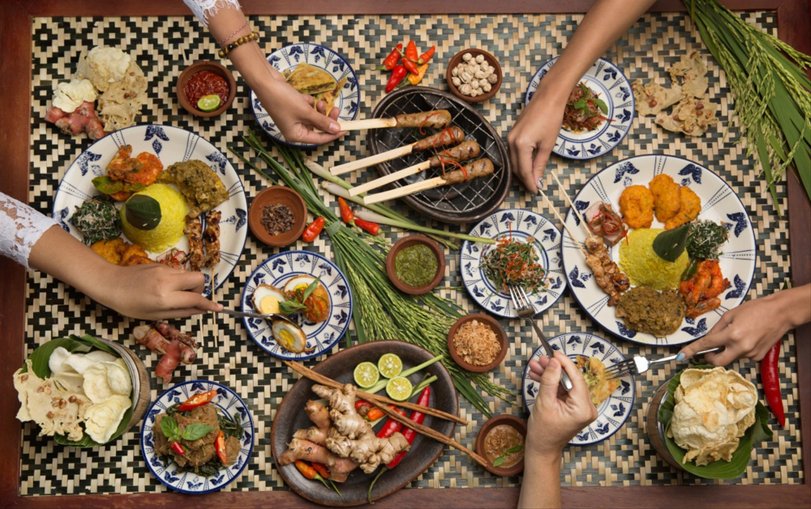
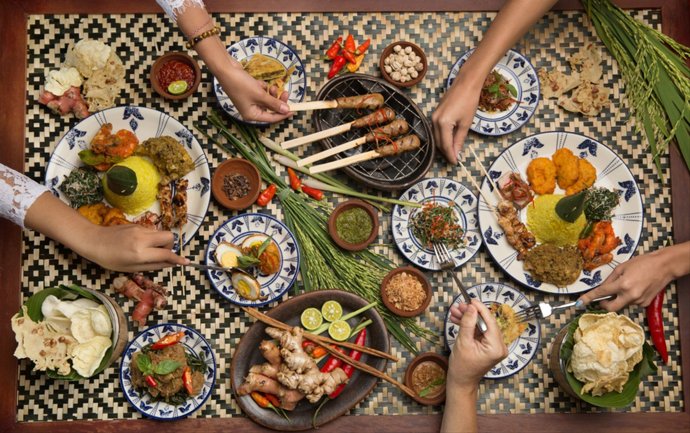

Kuliner Nusantara
Nusantara tidak hanya kaya akan budaya, tetapi juga menyimpan warisan kuliner yang luar biasa. Di sini, Anda akan menemukan beragam sajian tradisional dari berbagai daerah di Indonesia, mulai dari Sabang hingga Merauke. Setiap masakan memiliki cerita, filosofi, dan kekayaan rasa yang menjadikannya unik.
Melalui situs ini, kami mengajak Anda untuk menjelajahi kelezatan kuliner Nusantara, mempelajari bahan-bahan lokal yang otentik, serta memahami teknik memasak yang diwariskan secara turun-temurun. Temukan keanekaragaman rempah-rempah, hidangan khas, serta sejarah di balik setiap piring yang tersaji.
Selamat menikmati perjalanan rasa di Nusantara, di mana setiap suapan adalah sebuah pengalaman baru!

 
